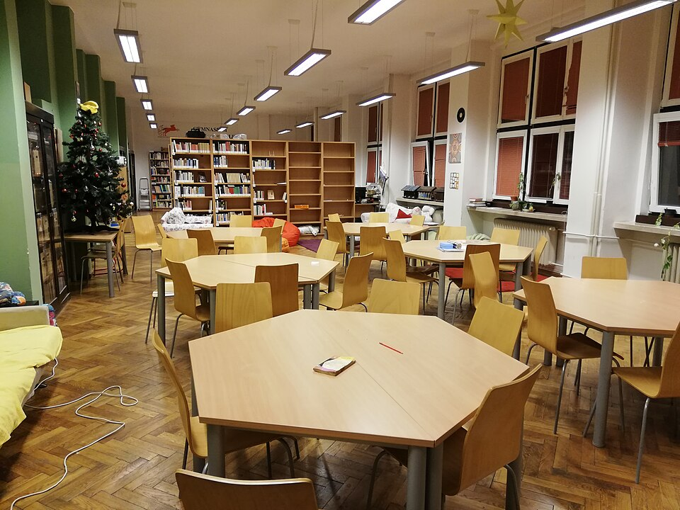

학교 도서관 열람실 (이미지) · 사진: Mojmir Churavy / Wikimedia Commons, CC BY-SA 4.0
국제학교 표절·학문적 정직성(Academic Integrity) — 어디서 걸리고, 과외는 어디까지인가
1. 무엇이 위반인가 — 네 가지로 나눠 보기
IB는 부정행위(malpractice)를 "부당한 이득을 얻거나 얻을 수 있는 행위"로 정의하고, 대표적인 형태를 아래처럼 나눕니다. IB 학교가 아니어도 미국식·영국식 국제학교 대부분이 비슷한 틀을 씁니다.
| 유형 | 무엇인가 | 한국 가정이 놓치는 부분 |
|---|---|---|
| 표절 Plagiarism | 남의 글·생각·그림·자료를 출처 없이 자기 것처럼 내는 것 | 고의가 아니어도 표절로 봅니다 |
| 공모 Collusion | 친구가 내 과제를 베끼게 두는 것, 시험 내용을 알려주는 것 | 보여준 쪽도 같이 처리됩니다 |
| 중복 제출 Duplication | 같은 결과물을 허락 없이 여러 과목에 내는 것 | 내 글인데 왜 안 되냐 — 안 됩니다 |
| 부당한 행위 Unfair practice | 시험 중 부정행위 등 유불리를 만드는 모든 행위 | 반입물·전자기기 규정도 포함됩니다 |
※ 실제 조사 절차와 처분 수위는 학교마다 다릅니다. 경고로 끝나는 경우부터 해당 과제 0점, 기록 남김까지 폭이 넓습니다. 재학 중인 학교의 학문적 정직성 규정(Academic Integrity Policy)을 직접 확인하세요. 대개 학기 초 안내문이나 학생 핸드북에 들어 있습니다.
2. 한국 학생이 악의 없이 걸리는 다섯 장면
제가 실제로 가장 자주 보는 순서대로 적습니다.
· ① "내 말로 바꿔 썼으니 괜찮다" — 가장 흔합니다. 한국에서는 자료를 읽고 자기 문장으로 정리하면 충분하다고 배웁니다. 국제학교 기준은 다릅니다. 문장을 바꿔 썼어도 생각을 가져왔으면 출처를 답니다. 이걸 패러프레이즈(paraphrase)라고 부르는데, 패러프레이즈에도 출처가 붙습니다.
· ② 한국어 자료를 번역해 넣기 — 한국어 블로그·기사를 영어로 옮겨 쓰면서 "원문이 한국어니까 못 찾겠지"라고 생각하는 경우입니다. 언어가 바뀌어도 출처는 달아야 합니다.
· ③ 그림·표·그래프에 출처를 안 달기 — 글에는 각주를 달면서 이미지에는 안 다는 경우가 정말 많습니다. 모든 시각 자료에도 출처가 붙습니다.
· ④ 친구와 같이 풀고 답까지 비슷하게 내기 — 한국에서는 미덕에 가깝습니다. 국제학교에서는 과제 성격에 따라 공모가 됩니다. "같이 공부해도 되는 과제"와 "혼자 써야 하는 과제"는 지시문에 구분돼 있습니다. 그 문장을 읽는 습관이 필요합니다.
· ⑤ 예전에 쓴 글을 다시 내기 — 내가 쓴 글이니 괜찮다고 생각하시는데, 중복 제출에 해당합니다. 쓰고 싶다면 먼저 교사에게 물어보면 됩니다.
3. 인용의 최소 규칙 — 이 세 가지만 지켜도 대부분 막힙니다
완벽한 학술 인용을 배울 필요는 없습니다. 아래 세 가지면 중·고등 과제에서 생기는 사고는 거의 막힙니다.
· 규칙 1 — 내 머리에서 나오지 않은 것에는 전부 출처. 숫자, 남의 주장, 정의, 그림, 표. 기준은 간단합니다. "이걸 내가 스스로 알았나?" 아니면 출처를 답니다.
· 규칙 2 — 읽으면서 바로 적는다. 다 쓰고 나서 출처를 되짚으면 반드시 몇 개가 빠집니다. 자료를 읽는 순간 링크와 날짜를 따로 적어 두는 칸을 만들어 두세요. 이 습관 하나가 사고를 가장 많이 막습니다.
· 규칙 3 — 형식은 학교가 정한 것 하나만. MLA·APA 같은 형식은 학교나 과목이 지정합니다. 여러 형식을 섞지 말고 지정된 것 하나를 쓰세요. 형식이 조금 틀린 것보다 출처가 아예 없는 것이 훨씬 큰 문제입니다.
덧붙여, 많은 국제학교가 과제를 표절 검사 시스템에 올려 받습니다. 아이가 "선생님이 어떻게 알겠어"라고 생각하고 있다면, 그 전제가 틀렸다는 것부터 알려주셔야 합니다.
4. AI 도구는 어떻게 봐야 하나
요즘 상담에서 빠지지 않는 질문입니다. 솔직하게 말씀드리면 학교마다 기준이 다르고, 지금도 바뀌는 중입니다. 그래서 여기서 "이렇게 하면 된다"고 단정해 드릴 수 없고, 아래 원칙만 말씀드립니다.
· 학교 규정을 먼저 확인하세요. 금지, 조건부 허용(밝히면 가능), 과목별 다름 — 세 가지가 다 있습니다. 학생 핸드북이나 과제 지시문에 적혀 있습니다.
· 허용되더라도 "밝히는 것"이 핵심입니다. 어떤 도구를 어디에 썼는지 적도록 요구하는 학교가 늘고 있습니다. 밝히면 문제가 없던 일이, 숨기면 부정행위가 됩니다.
· 제출물의 생각이 아이 것이어야 합니다. 이건 AI 이전부터 바뀐 적이 없는 기준입니다. 자료를 찾거나 문법을 점검하는 것과, 결론을 대신 만들어 오는 것은 완전히 다른 일입니다.
· 실력이 안 늘면 결국 시험에서 드러납니다. 에세이 점수는 좋은데 감독 하에 치르는 시험 점수가 낮으면 교사는 바로 알아챕니다.
5. 그래서 과외는 어디까지 도와도 되나
이 글을 쓰는 저희에게 직접 걸린 문제라 분명히 적어 두겠습니다. 저희가 지키는 기준은 하나입니다. 제출물의 문장과 결론은 학생의 것이어야 한다.
| 해도 되는 것 | 하면 안 되는 것 |
|---|---|
| 과제 지시어를 함께 읽고 무엇을 요구하는지 확인 | 선생님이 문장을 대신 써 주기 |
| 채점 기준표를 놓고 어느 항목이 약한지 짚기 | 학생이 이해 못 한 결론을 넣어 주기 |
| 학생이 쓴 초안에서 근거가 빈 자리를 질문으로 알려주기 | 답안을 통째로 고쳐 돌려주기 |
| 인용 형식·참고문헌 작성법 가르치기 | 출처를 대신 정리해 붙여 주기 |
| 비슷한 다른 문제로 연습시키기 | 제출할 문제를 대신 풀어 주기 |
오른쪽 칸은 당장 점수가 오르는 것처럼 보입니다. 그런데 두 가지가 반드시 따라옵니다. 첫째, 감독 시험에서 성적이 갈라져 교사가 알아챕니다. 둘째, 위반으로 처리되면 그 기록이 아이에게 남습니다. 점수 하나와 바꿀 만한 것이 아닙니다. 학교에 따라 외부 도움을 받은 사실을 밝히도록 요구하기도 하니, 이 부분도 학교 규정을 확인하시는 편이 좋습니다.
한 가지 더 말씀드리면, 아이가 남의 글을 가져다 쓰는 진짜 이유는 대개 게으름이 아닙니다. 영어로 자기 생각을 문장으로 만들 줄 몰라서입니다. 그래서 저희는 혼내는 대신 주장 → 근거 → 분석의 뼈대를 세우는 훈련부터 시작합니다. 스스로 쓸 수 있게 되면 베낄 이유가 없어집니다. (영어 공부법 · 에세이·인터뷰 준비 참고)
6. 집에서 지금 하실 수 있는 것
· 학생 핸드북에서 "Academic Integrity" 항목을 찾아 아이와 같이 읽으세요. 대부분 한 쪽 분량입니다. 같이 읽는 것만으로 절반은 예방됩니다.
· 자료 링크를 적는 칸을 만들어 주세요. 과제 문서 맨 아래에 "참고한 것" 칸을 두고 읽는 즉시 붙여넣게 하면 됩니다.
· 과제 지시문에서 "혼자 해야 하는가"를 확인하는 습관을 들이세요. individually, in pairs, group 같은 단어가 지시문에 들어 있습니다.
· 이미 연락을 받으셨다면 — 감정적으로 대응하지 마시고, 학교가 지적한 구체적 부분과 절차를 먼저 물어보세요. 어떤 규정의 어느 유형인지, 다음 단계가 무엇인지를 확인하는 것이 먼저입니다.
정리
국제학교의 학문적 정직성은 도덕 교육이 아니라 평가 규칙입니다. 위반은 크게 표절·공모·중복 제출·부당한 행위 넷으로 나뉘고, 한국 학생은 대부분 악의 없이 걸립니다. 예방의 핵심은 세 가지입니다. ① 내 머리에서 나오지 않은 것에는 전부 출처를 달 것 ② 읽는 순간 링크를 적어 둘 것 ③ AI를 포함해 외부 도움은 학교 규정대로 밝힐 것. 그리고 가장 근본적인 해결책은, 아이가 영어로 자기 생각을 쓸 수 있게 만드는 것입니다. 30분 무료 상담으로 아이의 글이 지금 어느 단계인지 함께 봐 드립니다.